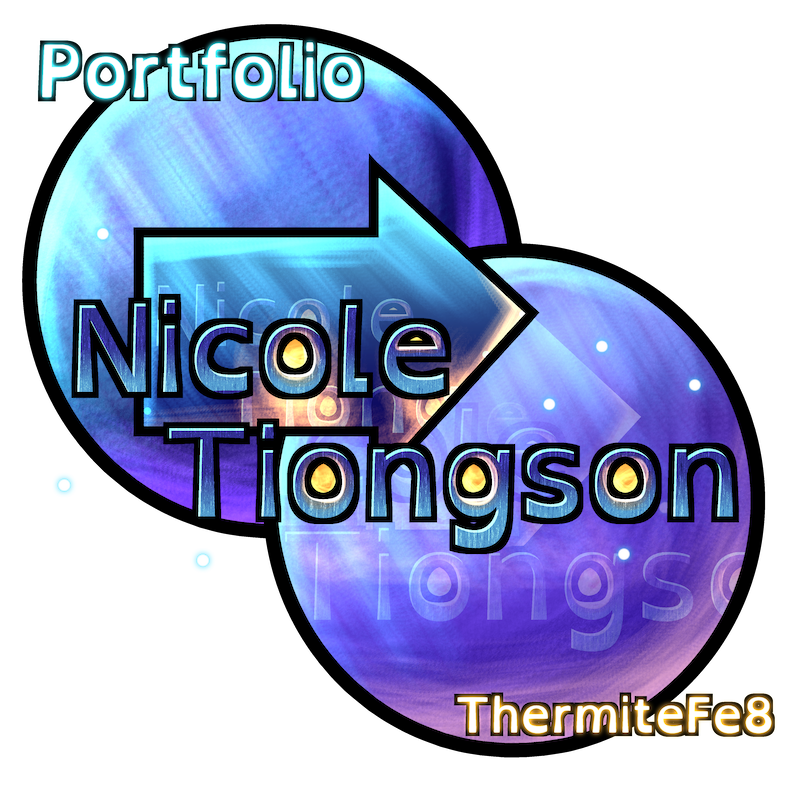
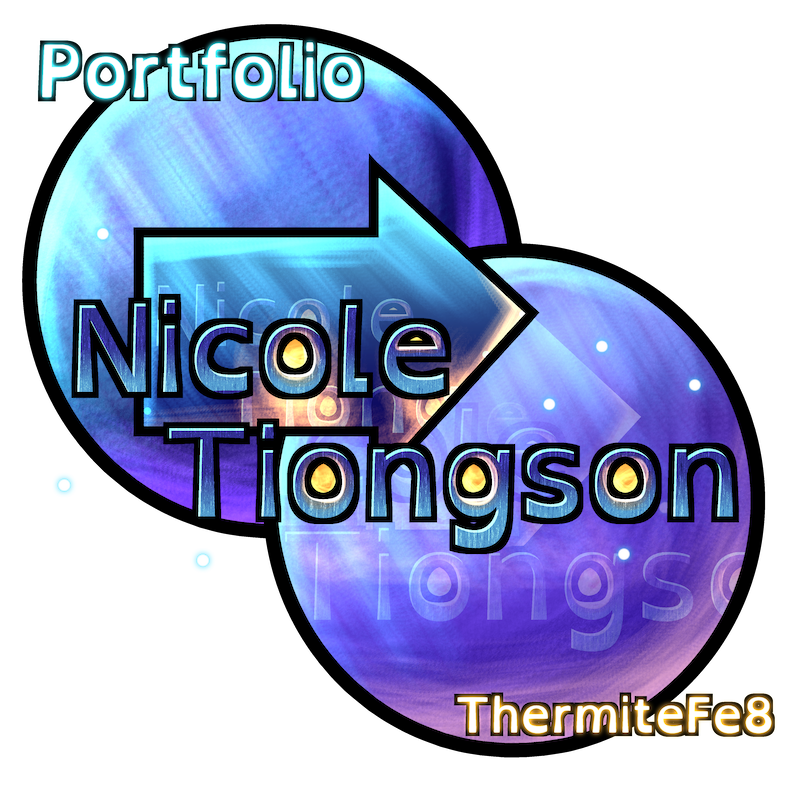

thermitefe8@gmail.com | thermitefe
2D Illustrations and Sprites
Tutorials and Essays
3D models and animations
Music and Foley
Games and Scripts
Nicole is a Game Artist who excels at creating 2D assets for both characters and the environment that make her games feel eye-catching and exciting. After making solodev games and working with dev teams with sizes ranging from 5 to 50 people, she knows what makes games work. She can program, compose, and model - she's got everything that a team needs and then some. She cares deeply about disability accessibility in games, going as far as to add extensive accessibility features into her own solodev games.
Nicole has worked with her university’s Social Science Research Lab and given a presentation at the Eastern Sociological Society conference. Along with that, she's pushed three of GADIG's (Game Analysis Design Interest Group) games to completion and is working on the fourth game. She's created a feature-complete game in a month, creating all of the art, code, sounds, and music by herself. Right now, she's working on her pixelart Capstone game and on a 3D studio game.
Nicole is trained in 3D modeling, texturing, and animation, as well as composition and foley. She's also certified for human research and was a finalist for the Schwartzstein Award for First-Year Research.
Nicole is finishing her Computer Game Design degree at George Mason University.
I made this site with Github Pages! However, manually programming every single image would've been a pain - I make a lot of art. That's why I made a system that dynamically loads an arbitrary amount of images depending on how many I've got in each folder.
However, without Node.JS, I couldn't iterate through folders and I can't install the Node.JS framework on Github Pages because this is supposed to be static. So I had to write a program that'd go through my art folders and make a text file listing out all the file names.
Then when you load up the Portfolio pages, it looks at the list of files, sorts the ones it wants using the file extension names (.png, .mp4, etc), and then loads all of them onto the page. The naming system for files allows me to display extra info while separating the name of the art piece too.
Clicking on the image/video pulls it up and makes it bigger, also displaying extra information about the image. For this, I just used a modal with an img/video element and a dark overlay covering the rest of the page. Clicking on the overlay closes the modal.
Also the art folder that this site references is synced with Google Drive - that way if Github bugs out or if Drive goes down, you can still look at my stuff.